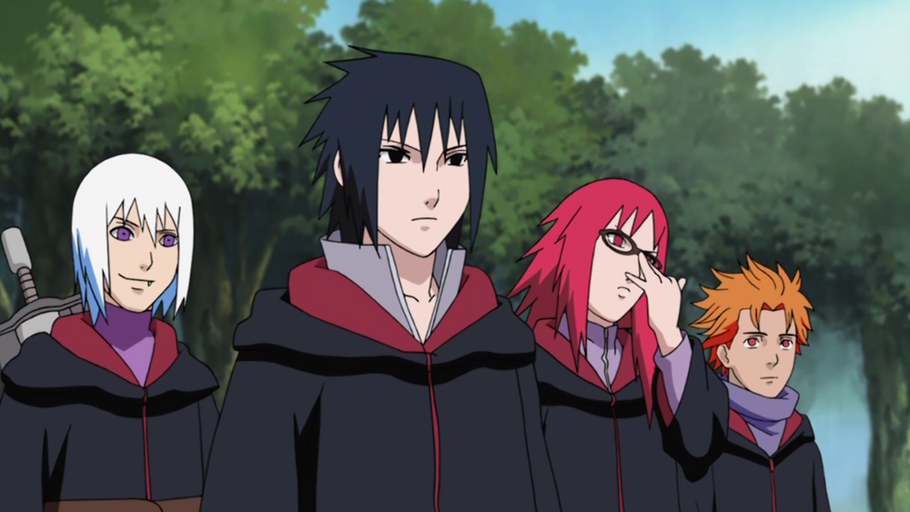
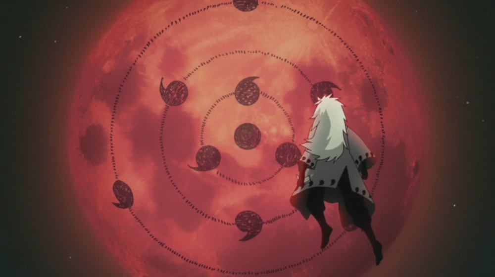
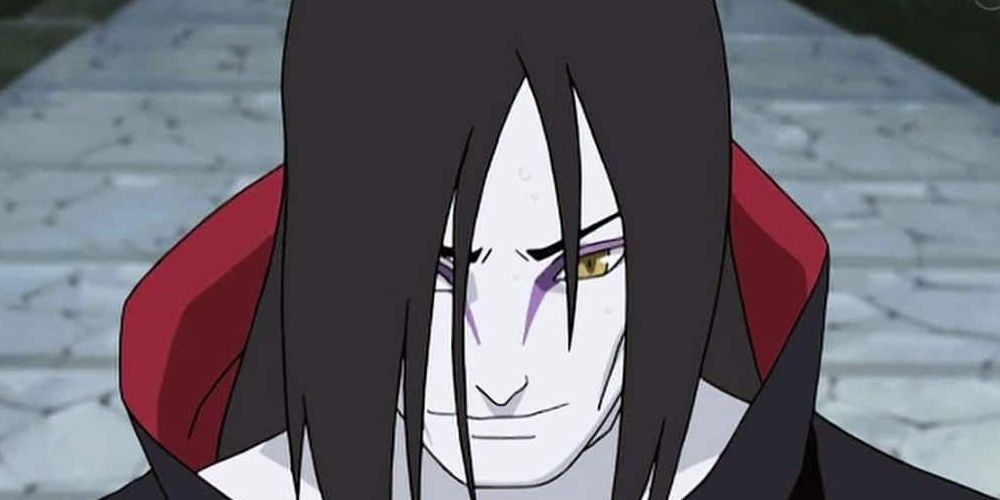

Historia de la organización

Fundada por Yahiko, esta organización fue temida en todo el mundo por el alcance de su influencia en el mundo ninja. La mayoría de sus integrantes se encontraban en las páginas del Libro Bingo por lo cual se tenía la orden de matarlos.
Objetivos

El objetivo principal de la organizacion fue el de capturar a los Jinchūriki para extraerles sus Bestias con Cola, sellarlas en la Estatua Demoníaca del Camino Exterior y de esa manera despertar al Diez Colas, la criatura más poderosa del planeta.
Inicios

Durante sus comienzos, Akatsuki fue formada por Yahiko, junto a sus compañeros Nagato y Konan, quienes buscaban encontrar la paz sin llegar a utilizar la violencia y llegando a acuerdos pacíficos con los invasores.
Organización aliada
Taka se ha aliado con Akatsuki. Ellos usan las capas de Akatsuki, pero parecen tener sus collares altos doblados hacia abajo. Ninguno de sus integrantes usa un protector, esmalte de uñas, sombreros de paja cónicos ni los anillos representativos de la organización, ya que estos no pueden ser reemplazados y se deben recuperar los perdidos.
Plan ojo de luna
El Plan Ojo de Luna (Tsuki no Me Keikaku) es el plan maestro de Madara Uchiha el cual consiste en crear un mundo ideal y que posteriormente fue adoptado por Obito Uchiha. Obito mencionó que ha sido demasiado cauteloso por mucho tiempo, y que es hora de salir de las sombras y comenzar su plan.
Ex miembro
Uno de los legendarios Sannin de Konoha. Sin embargo, los experimentos poco éticos que comenzó a hacer para lograr su anhelada inmortalidad hicieron que fuera perseguido.Poco después de dejar la aldea, se unió a Akatsuki. Aunque todavía era el compañero de Sasori, su objetivo era obtener el Sharingan robando el cuerpo de Itachi Uchiha. Después de que su plan falló, dejó el equipo.